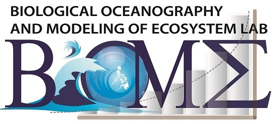
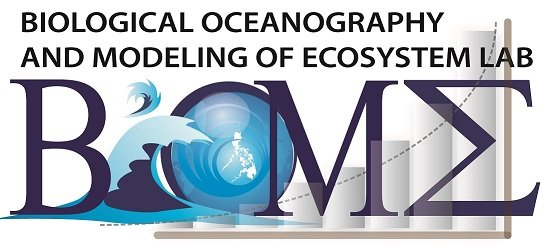

Viewing: Biological Oceanography and Modeling of Ecosystem (BiOME) laboratory
 

The BiOME lab is generally interested in understanding how marine ecosystem patterns and processes emerge from the local interactions of individual organisms. Specifically, our research is centered around understanding the dynamics of the base of the food web of ocean ecosystems, especially the phytoplankton, how these are affected by anthropogenic and natural factors, and how these effects can cascade up to our fisheries. Through an arsenal of field, laboratory and modelling approaches, we hope to obtain a better handle on issues such as changes in productivity and ecosystem conditions. One main approach is the use of computational models integrating empirical data across oceanographic scales and disciplines in order to tease out the mechanisms driving populations and ecosystems, as well as to help provide decision-support systems for natural resource conservation and management. Beyond research, the lab is actively involved in promoting better appreciation and understanding of the oceans and science at various levels: from high school kids to graduate students.
VISIT OUR FULL SITEGallery
Principal Investigator
Aletta Concepcion T. Yñguez, Ph.D.
Dr. Aletta Yñiguez is an Associate Professor at the Marine Science Institute, University of the Philippines in Diliman. She obtained her Ph.D. from the Rosenstiel School of Marine and Atmospheric Science (RSMAS), University of Miami in Florida with the support of Fulbright and Maytag scholarships. She is also the Chair of the UP Puerto Galera Biodiversity and Environmental Research and Outreach Center. She is interested in population and ecosystem dynamics, plankton ecology, harmful algal blooms, fisheries, human impacts on marine ecosystems, ecological modelling.

Lab Highlight
Estuarine, Coastal and Shelf Science
Cordero, et al.,
March 2021
Characterizing the vertical phytoplankton distribution in the Philippine Sea off the northeastern coast of Luzon
Contact Us
Marine Science Institute, University of the Philippines Diliman
P. Velasquez St., University of the Philippines
Diliman, Quezon City, Philippines 1101
Tel. No: +63 2 922-3962
E-mail: atyniguez@msi.upd.edu.ph
Website: https://biomeph.com